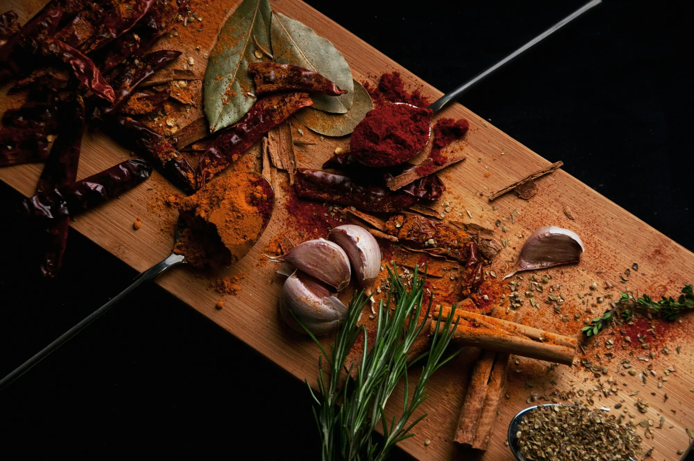

Temperos artesanais • Feitos em pequenos lotes
O erro não é a receita é a falta do tempero certo.
Combinações de especiarias que despertam aromas, histórias e novas possibilidades à mesa.
-
Artesanais
Misturados com cuidado, do jeito que a cozinha de verdade pede.
-
Pequenos lotes
Quantidades reduzidas para cuidar de cada mistura.
-
Blends autorais
Combinações próprias para realçar cada tipo de prato.
-
Pedido pelo WhatsApp
Atendimento direto, rápido e sem complicação.
Nossa história
A arte de transformar temperos em sabor
Na Alquimia Culinária, cada tempero nasce de uma pergunta simples: o que falta neste prato? A resposta está na combinação certa de especiarias, ervas e aromas, misturados em pequenos lotes para preservar o caráter de cada ingrediente.
Acreditamos que o erro raramente está na receita. Está na falta do tempero certo. Por isso criamos blends autorais, pensados para dar identidade a assados, grelhados e à comida do dia a dia.
-
01
Pequenos lotes
Produção artesanal em quantidades reduzidas, com atenção a cada mistura.
-
02
Blends autorais
Combinações próprias de especiarias e ervas para realçar cada tipo de prato.
-
03
Sabor com história
Aromas que despertam memórias e abrem espaço para novas possibilidades à mesa.
Dúvidas
Perguntas frequentes
Como faço meu pedido?
É só clicar em “Fazer pedido” e falar com a gente pelo WhatsApp. Você escolhe os temperos e combinamos os detalhes por lá.
Como usar os temperos?
Polvilhe antes ou depois do preparo e comece com uma pitada: dá para ir ajustando ao seu gosto. Os blends defumados combinam muito com o calor da grelha e do forno.
Qual tempero escolho para cada prato?
Para carnes e churrascos, vá nos blends intensos e defumados. Para peixes, saladas, massas e legumes, os frescos e aromáticos. Na seção “Para cada momento” há sugestões.
Posso tirar dúvidas antes de comprar?
Claro! Chame a gente no WhatsApp ou no Instagram e ajudamos você a escolher o tempero ideal.
Contato
Pronto para dar o tempero certo ao seu prato?
Fale com a gente e descubra o blend perfeito para a sua mesa.